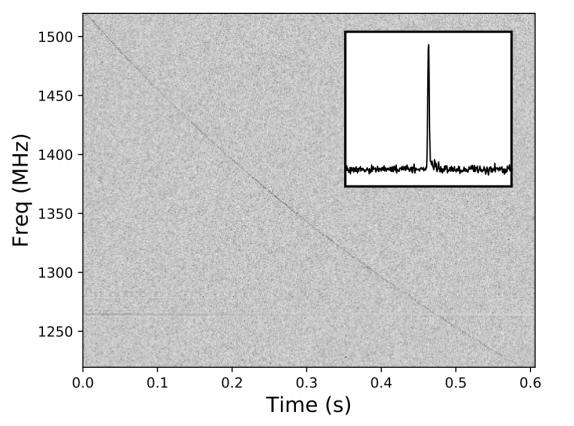
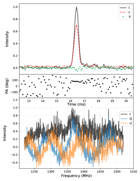
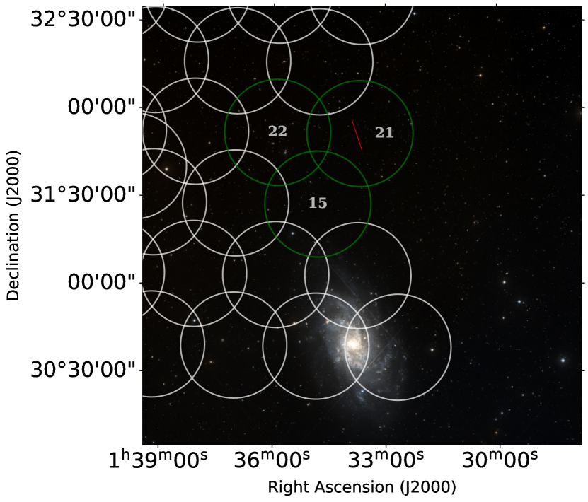
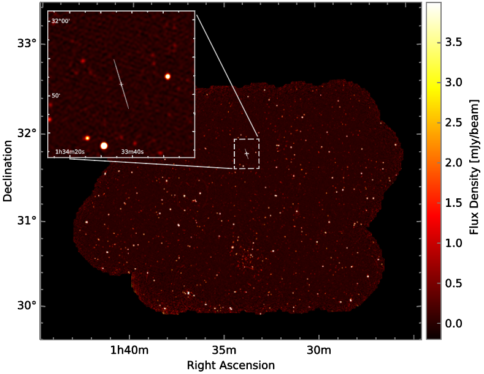
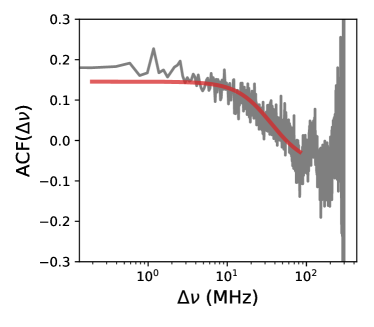
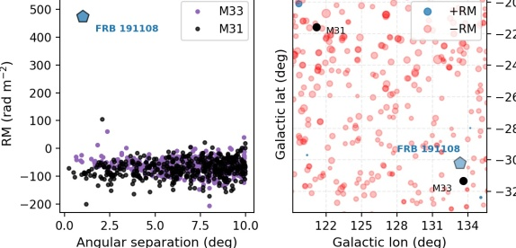

اندفاع راديوي سريع ساطع ذو مقياس دوران عال يخترق هالة M33
الملخص
نبلّغ عن رصد اندفاع راديوي سريع ساطع، FRB 191108، باستخدام Apertif على مصفوفة Westerbork Synthesis Radio Telescope (WSRT). يتيح لنا مقياس التداخل تحديد موضع FRB ضمن قطع ناقص ضيق عبر توظيف معلومات الحزم المتعددة ضمن نمط حزمة مغذّي المصفوفة الطورية (PAF) في Apertif، وعبر حزم المصفوفة المترابطة المختلفة. يمر خط البصر الناتج قريبا من مجرة المجموعة المحلية M33، بمعامل اصطدام لا يتجاوز 18 kpc بالنسبة إلى النواة. كما يعبر الوسط المحيط بالمجرة الأكبر بكثير لمجرة M31، مجرة أندروميدا. نجد أن البلازما المشتركة لمجرات المجموعة المحلية يمكن أن تسهم بنسبة 10% من مقياس التشتت البالغ 588 pc cm-3. يمتلك FRB 191108 مقياس دوران فاراداي قدره +474 rad m-2، وهو أكبر من أن يُفسَّر إما بدرب التبانة أو بالوسط بين المجرّي. واستنادا إلى قيم RM الأعتدل لمصادر أخرى خارج مجرية تعبر هالة M33، نخلص إلى أن البلازما الكثيفة الممغنطة تقع في المجرة المضيفة. يُظهر FRB بنية ترددية على مقياسين، أحدهما متسق مع الوميض المجري المخمَد وبنية طيفية أعرض عند MHz. إذا كانت الأخيرة ناجمة عن التشتت في الوسط المحيط بالمجرة المشترك M33/M31 CGM، فإن نتائجنا تقيّد بيئة بلازما المجموعة المحلية. لم نجد أي مصادر راديوية مستمرة مرافقة في بيانات مسح التصوير الخاص بـ Apertif.
keywords:
اندفاعات راديوية سريعة – الرصد – الأجهزة1 المقدمة
الاندفاعات الراديوية السريعة (FRBs) نبضات راديوية خارج مجرية، وقد اكتُشف منها حتى الآن نحو 110 (Lorimer et al., 2007; Petroff et al., 2016). وهي قصيرة المدة (s–ms)، وساطعة (0.01–100 Jy لكثافة الفيض العظمى)، وذات تشتت عال، وشائعة نسبيا ( 103 لكل سماء-1 لكل يوم-1 فوق 1 Jy; Cordes and Chatterjee, 2019; Petroff et al., 2019). تقع أكثر الأسئلة إلحاحا في علم FRB ضمن فئتين عريضتين: ما الذي يسبب هذه الاندفاعات الغامضة؟ وكيف يمكن توظيفها؟
في الفئة الأولى من الأسئلة، أُحرز تقدم مهم في السنوات القليلة الماضية. فقد وُجد أن مجموعة فرعية من FRBs تتكرر، وكان أولها FRB 121102 المكتشف بأريسيبو (Spitler et al., 2014, 2016). وقد رُصد ثمانية عشر مصدرا متكررا باستخدام Canadian Hydrogen Intensity Mapping Experiment (CHIME) (CHIME/FRB Collaboration et al., 2019a, c; Fonseca et al., 2020) إضافة إلى مصدر واحد من ASKAP (Kumar et al., 2019). ولا يزال غير واضح ما إذا كانت المصادر التي لم يُرصد تكرارها تنتمي إلى فئة متميزة من الأحداث المنفردة، أم أن إحصاءات تكرارها (المعدل، والتكتل الزمني، ودالة اللمعان، وغير ذلك) تجعلها صعبة الرصد أكثر من مرة باستخدام معظم المقاريب (مثلا Kumar et al., 2019). وقد أتاح تحديد الموضع الآني بدقة ثانية قوسية تعرّف المجرات المضيفة، كاشفا عن تنوع المجرات التي تقيم فيها FRBs (Bannister et al., 2019; Ravi et al., 2019). كما وفر الرصد اللاحق بالتداخل ذي الخطوط القاعدية الطويلة جدا (VLBI) للاندفاعات FRBs المتكررة تحديدا للموضع بدقة ملي ثانية قوسية، وكان ذلك أساسيا في فهم بيئة السلف القريبة (Marcote et al., 2017; Chatterjee et al., 2017; Tendulkar et al., 2017; Bassa et al., 2017; Michilli et al., 2018; Marcote et al., 2020).
أما في فئة تطبيقات FRB، فتتراوح المقترحات النظرية التي طُرحت من دراسات الوسط بين المجرّي (IGM) والوسط المحيط بالمجرة (CGM) (McQuinn, 2014; Prochaska and Zheng, 2019; Vedantham and Phinney, 2019)، إلى العدسة الجاذبية (Muñoz et al., 2016; Eichler, 2017) وعلم الكونيات (Walters et al., 2018). ومؤخرا أُحرز تقدم في وضع مثل هذه المقترحات موضع التطبيق (Ravi et al., 2016; Prochaska et al., 2019).
في هذه الورقة نبلّغ عن رصد FRB 191108 باستخدام Apertif Radio Transient System (ARTS) على Westerbork Synthesis Radio Telescope (WSRT). لهذا المصدر مقياس دوران فاراداي RM=+474 rad m-2، وهو أكبر بمرتبة مقدار من الإسهامات المجرية والمتوقعة من IGM. كما يمر عبر هالة مجرة المجموعة المحلية M33 (مجرة المثلث) بمعامل اصطدام أفضل ملاءمة لا يتجاوز 18 kpc. وتندمج هالة M33 في الهالة المجرية الأكبر بكثير لمجرة M31 (مجرة أندروميدا)، التي نتوقع أن تؤثر أيضا في انتشار النبضة. في القسم 2 نصف بإيجاز خط الاكتشاف. ونقدم اكتشاف الاندفاع وجهود تحديد موضعه في القسم 3، ونناقش قيود مقياس الدوران والتكرار في القسم 4 ونختتم في القسم 5.
2 خط ARTS
يبحث Apertif Radio Transient System (ARTS) عن نبضات راديوية باستخدام عشرة أطباق قطر كل منها 25-m من WSRT مزودة بمغذيات Apertif الجديدة ذات المصفوفة الطورية (PAFs; Oosterloo et al., 2010; Adams and van Leeuwen, 2019). ومع أن الوصف الكامل لـ ARTS يرد في van Leeuwen et al. (2020)، فإننا نسلط الضوء أدناه على عدد من السمات ذات الصلة.
من أجل بحث FRB الآني، نشكل حزم ثنائيات القطب في كل PAF لإنتاج 40 "حزمة مركبة" جهدية (CBs) بعرض نطاق 300 MHz متمركز عند تردد راديوي قدره 1370 MHz. ويتم هذا في كل طبق. ثم تُعاد تشكيل الحزم المركبة لاحقا في العتاد الثابت عبر المصفوفة الشرقية-الغربية لإنشاء 12 حزمة مصفوفة مترابطة (TABs) لكل حزمة مركبة، ومنها نولّد تيارات بيانات Stokes I وQ وU وV بدقة زمنية وترددية قدرها 81.92 s و 195 kHz. ونظرا إلى أن عرض النطاق النسبي لـ Apertif عال، 0.2، فلا بد من إعادة تركيب TABs تردديا لإنتاج "حزم مركبة تركيبيا" (SBs). وتشير الحزمة المركبة تركيبيا في الاتجاه نفسه عبر نطاق 300 MHz، وهو ما لا ينطبق على TAB. ويقدم van Leeuwen et al. (2020) عرضا عاما لهذا التشكيل الهرمي للحزم. في الإجمال، تُشكَّل 71 حزمة مركبة تركيبيا لكل حزمة مركبة، وتمتد على مجال رؤية الحزمة الأولية الكامل (FoV) البالغ 0.23 deg2. ويمتلك PAF ذو الحزم المركبة الـ 40 كاملا مجال رؤية يقارب 9 deg2. ثم تُفتش حزم Stokes I المركبة تركيبيا، وعددها الكلي 2840، آنيا بواسطة برنامجنا للبحث عن النبضات المفردة AMBER11 1 https://github.com/AA-ALERT/AMBER (Sclocco et al., 2016, 2020)، الذي يعمل على عنقود حوسبة مخصص مؤلف من 40-عقدة بوحدات معالجة رسوميات (GPU) في موقع WSRT. وتتولى معالجة البيانات اللاحقة منظومة تحليل بيانات المرشحين الآنيين من نظام Apertif للعابر الراديوي (DARC ARTS22 2 https://github.com/loostrum/darc; Oostrum 2020a). تُعنقد المرشحات الخام في مقياس التشتت (DM)، والزمن، وعرض النبضة، و رقم الحزمة؛ ثم تُرسل إلى مصنّف تعلم آلي يسند احتمالا لكون المرشح FRB حقيقيا (Connor and van Leeuwen, 2018). وبينما تُكتب بيانات Stokes I دائما إلى ملفات filterbank على القرص، لا تُحفظ بيانات Stokes Q وU وV المخزنة مؤقتا إلا إذا عرّف AMBER مرشحا بمدة كلية 10 ms، وبنسبة إشارة إلى ضجيج (S/N فيما يلي) أكبر من 10، وبـ DM يزيد بأكثر من 20% على القيمة المتنبأ بها على طول خط البصر من نموذج كثافة الإلكترونات YMW16 (Yao et al., 2017).

3 النتائج
رُصد FRB 191108 في ثلاث حزم مركبة، عند UTC مرجح لمركز كتلة النظام الشمسي 19:48:50.240. وكان DM عند الاكتشاف 588 pc cm-3. يعرض الشكل 1 الطيف الديناميكي للنبضة المشتتة وكذلك ملف النبضة منزوع التشتت. بلغت القيمة العظمى لـ S/N من الكشف الآني 60 في الحزمة المركبة 21 (انظر الشكل 3)، وأسند مصنّف التعلم الآلي لدينا احتمالا قدره 99.9 لكونه عابرا حقيقيا (Connor and van Leeuwen, 2018). وقد حفّز كشف AMBER تفريغا لبيانات Stokes الكاملة، مما أتاح لنا تحليل خصائص الاستقطاب في الاندفاع.
3.1 خصائص الاستقطاب
قيس FRB 191108 على أنه مستقطب خطيا بنحو 70 ومستقطب دائريا بنسبة 10. ووُجد أن له مقياس دوران (RM) قدره +474 rad m-2. حُصل على أفضل RM ملائم بتطبيق ملاءمة خطية بالمربعات الصغرى على زاوية الموضع (PA) بدلالة مربع الطول الموجي. وحُددت الإشارة عبر التحقق من أن نابض Crab كان له RM قدره 43 rad m-2 أثناء رصد في اليوم نفسه.
أُجريت معايرة استجابة النطاق ومعايرة الاستقطاب باستخدام 3C286، وهو مصدر معايرة معياري، ومعروف بأن له استقطابا دائريا ضئيلا جدا. نتعامل مع قيمة Stokes V على أنها حد أعلى بسبب عدم اليقين في إجراء معايرة الاستقطاب. رُصد 3C286 في الحزمة المركبة نفسها مثل FRB، لكنه رُصد في TAB المركزي، حيث يُتوقع أن يكون التسرب في حده الأدنى. عُثر على FRB 191108 في الحزمة المركبة تركيبيا رقم 37، وهي تركيب خطي من TABs غير مركزية. وقد تكون لتلك الحزمة المركبة تركيبيا خصائص تسرب مختلفة قليلا عن TAB المركزي، وسيتحدد ذلك كميا على نحو أفضل مع استمرار معايرة النظام. ومن رصد 3C286 on/off، حللنا طورا واحدا في كل قناة ترددية مخفضة التقسيم، مع العلم بأن ارتباط المركب ينبغي أن يكون حقيقيا صرفا إذا كان Stokes V صفرا. وتحققنا من أن حل معايرة الاستقطاب يتفق مع طريقة مختلفة استخدمت FRB نفسه، إذ فصلت مركبة التي تتغير مع عن تلك التي لا تتغير، لأن Stokes V ينبغي ألا يُظهر دورانا فاراداييا في معظم الظروف. ولحسن الحظ، لا يتغير دوران الاستقطاب مع زاوية اختلاف المنظر في بيانات Westerbork، لأن الأطباق منصوبة على حوامل استوائية. ومن ثم، لا تؤثر الفروق في زاوية الساعة بين الرصدين. ومع ذلك، من الممكن أن يكون حل المعايرة مختلفا بما يكفي بين TABs والحزم المركبة تركيبيا بحيث يكون الاستقطاب الدائري المرصود 13 زائفا. ولحسن الحظ، فإن الدوران الفارادايي متين إزاء عدم اليقين في حل معايرة الاستقطاب، لأنه يصعب محاكاة دوران في مستوى Q/U يكون جيبيا في . ونحن واثقون من قيمة مقياس الدوران (RM) المبلّغ عنها.
وجد Cho et al. (2020) أن FRB 181112 أظهر تغيرات في PA الاستقطاب داخل الاندفاعات الفرعية وفيما بينها. ولا نرى أي دليل على تأرجح في PA عبر النبضة. كما وُجد أن FRB 121102 له PA استقطاب مسطح (Michilli et al., 2018; Gajjar et al., 2018; Hessels et al., 2019)، وكذلك FRB 180916.J0158+65 (المعروف باسم R3; CHIME/FRB Collaboration et al., 2019c). وهذا على خلاف كثير من النباضات وقد تكون له تبعات مثيرة للاهتمام لآليات انبعاث FRB. لكن في حالتنا قد يكون PA المسطح أثرا آليا. فمع أن PA الحقيقي قد يكون مسطحا عبر النبضة كما في FRBs السابقة، فإن العرض الذاتي لـ FRB 191108 غير محلول زمنيا، بمعنى أن أي تأرجح في PA الاستقطاب غير قابل للرصد؛ والـ PA المسطح ظاهريا عبر النبضة هو الزاوية المتوسطة زمنيا للنبضة الحقيقية. ويمكن أن يؤدي ذلك إلى إزالة الاستقطاب، لأن أخذ العينات الزمني الخشن والتشتت داخل القناة يضيفان فعليا متجهات استقطاب خطي عبر النبضة قد تشير في اتجاهات مختلفة. كسر إزالة الاستقطاب هو
| (1) |
هنا، هو تغير PA عبر النبضة بوحدات الراديان. وبما أننا نرصد 70 من انبعاث FRB على أنه مستقطب خطيا، فلا بد أن تكون النبضة الحقيقية مستقطبة على الأقل بهذا القدر، ولا يجوز أن يكون الخاص بها أكبر من 90 . ومن الممكن أن تكون لـ FRB 191108 وغيره من FRBs المطموسة زمنيا ذات كسور استقطاب معتدلة استقطابات ذاتية أعلى مما يُستنتج.

3.2 تحديد الموضع
بدمج معلومات الحزم المتعددة من الحزم المركبة المتداخلة البالغ عددها 40 (CBs) في PAF، مع المعلومات التداخلية المحتواة في TABs والحزم المركبة تركيبيا (SBs)، يستطيع Apertif تحقيق منطقة تحديد موضع نظرية مقدارها
| (2) |
وإن كان ذلك في التطبيق العملي سيعتمد على دقة نماذج أشكال الحزم لدينا. ولكي نحدد موضع FRB 191108، نحتاج أولا إلى الحصول على S/N للاندفاع في كل SB. اكتُشف FRB مبدئيا في حزمتين مركبتين متجاورتين، مع أعلى S/N في CB 21 (انظر الشكل 3). وباستخدام DM والطابع الزمني المحسنين بعد الكشف، نقيس S/N للاندفاع في كل SBs الخاصة بـ CB 21 والحزم المحيطة بها. وباستخدام عتبة S/N قدرها 8، رُصد FRB في CBs 15 و21 و22، عبر ما مجموعه 48 SBs. وكان أعلى S/N هو 103 في SB 37 من CB 21 (وفيما يلي الحزمة المرجعية).
ننشئ نموذجا لنمط حزمة Apertif بافتراض نمط حزمة أولية غاوسي لكل حزمة مركبة، بعرض نصف القدرة قدره عند 1370 MHz. ثم تُقاس كل CB باستخدام كثافة الفيض المكافئة للنظام المقيسة لكل CB والمحددة من مسح انجرافي لمصدر المعايرة 3C48. وبالتعريف بشبكة بدقة متمركزة على CB 21، نولد استجابة TAB لأطباق WSRT المتساوية التباعد البالغ عددها 8 عبر هذه الشبكة، ونعيد تركيبها عبر التردد في 71 SBs لكل CB. وتُكامل SBs عبر التردد، بافتراض مؤشر طيفي مسطح. ثم يُقاس النموذج إلى نموذج الحزمة المرجعية، مما ينتج تنبؤا بنسبة S/N بين كل SB والحزمة المرجعية.
بعد ذلك نحسب إحصائية عند كل نقطة في الشبكة. وبالنسبة إلى SBs التي لا يوجد فيها كشف، لا ندرج إلا النقاط التي تكون فيها S/N المنمذجة فوق عتبة الكشف ونستخدم عتبة S/N بدلا من S/N المرصودة. وتُشتق منطقة ثقة 90% من قيم باستخدام التحويل النظري بين مستوى الثقة و . وقد جرى التحقق من طريقة تحديد الموضع باستخدام كشوف متعددة الحزم لنبضات عملاقة من نابض Crab ونبضات مفردة من PSR J0528+2200، أيضا في CB 21.
طريقتنا مشابهة لتلك التي استخدمها CHIME (CHIME/FRB Collaboration et al., 2019a). أما النهج البايزي الذي اتبعه Bannister et al. (2017) في ASKAP فهو أكثر تفصيلا، إذ يسمح بأخطاء في حجم الحزمة وحساسيتها وموضعها. ومع ذلك، نلاحظ أن ASKAP كان يعمل في نمط عين الذبابة. وهذا يحد من دقة حزمة مفردة. وبالمقابل، تُشكل بيانات Apertif حزميا على نحو متماسك عبر المصفوفة، مما يؤدي إلى حزم كثيرة أضيق وأعلى دقة. ويحد ذلك من أثر عدم اليقين في مواضع الحزم المركبة، إذ إن اتجاه الحساسية العظمى لـ TABs الناتجة تهيمن عليه إزاحات الطور بين الأطباق. وتوجد تحسينات إضافية لتحديد مناطق ثقة Apertif، استنادا إلى عدة أرصاد لنباضات، قيد التنفيذ (Oostrum, 2020b). تتاح شيفرة تحديد الموضع على الإنترنت 33 3 https://github.com/loostrum/arts_localisation.
تُعرض منطقة الثقة النهائية المشتقة عند 90% في الشكل 3. ويماثل أفضل موضع ملائم (J2000) RA=01:33:47، Dec=+31:51:30. وللقطع الناقص للخطأ محور شبه رئيسي قدره ومحور شبه ثانوي قدره ، بزاوية موضع شرق الشمال. حُدد موضع FRB في منطقة تبعد عن نواة مجرة المجموعة المحلية M33. إن الزاوية الصلبة لتحديد الموضع، البالغة نحو 2100 ثانية قوسية مربعة (ثقة 90 )، أكبر من أن تتيح تعريفا غير ملتبس لمجرة مضيفة مرتبطة بـ FRB، حتى إذا كانت علاقة DM/ موثوقة ومستخدمة (Eftekhari and Berger, 2017). غير أننا، كما نناقش في القسم 4.2، إذا وُجد أن FRB 191108 يتكرر ورُصد عند زاوية اختلاف منظر مختلفة، فسنحقق تحديدا للموضع بدقة ثانية قوسية في كلا الاتجاهين لأن TABs ستكون عند زاوية موضع مختلفة على السماء.

3.2.1 مسح Apertif المتصل والنظير الراديوي
بحثنا عن مصدر راديوي مستمر مرتبط بـ FRB 191108 في صور المتصل من مسوح التصوير الخاصة بـ Apertif (Hess et al. 202044 4 https://alta.astron.nl). الفسيفساء في الشكل 4 هي تركيب من 31 حزمة مركبة من توجيهين مسحيين (191010042 و191209026) يتداخلان حول منطقة تحديد الموضع. صُنعت صور المتصل للفسيفساء باستخدام أعلى 150 MHz من نطاق تصوير Apertif (1280–1430 MHz). تغطي الفسيفساء 9 deg2 ويمكن رؤية M33 في النصف السفلي من الخريطة. لم نجد شيئا داخل منطقة خطأ تحديد الموضع فوق 5 عند ضجيج جذر متوسط مربع قدره 71 Jy .

للمصادر الراديوية النقطية كثافة سماوية أدنى من المجرات البصرية الخافتة، مما يخفض احتمال التطابق المكاني المصادف ويريح متطلبات تحديد الموضع للنظراء الراديويين (Eftekhari et al., 2018). كان المصدر الراديوي المستمر المرتبط بـ FRB 121102 نحو 200 Jy عند عند 1 GHz (Chatterjee et al., 2017)، ما يعني أننا كان يمكن أن نرصد سديما مكافئا فوق 3 لو كان FRB 191108 على المسافة نفسها مثل FRB 121102. وهذا أقرب من الانزياح الأحمر الأقصى الذي يقتضيه DM خارج المجري لـ FRB 191108، وهو (انظر القسم 3.4.1). لذلك ينبغي للوسط بين النجمي في المجرة المضيفة أو للبلازما الكثيفة الممغنطة المساهمة في RM الخاص بـ FRB أن تسهم بقدر مهم من DM حتى نتمكن من رصد مصدر مستمر شبيه بالمصدر المرتبط بـ FRB 121102. وهذا غير مستبعد: فباستخدام النمذجة نفسها لهالة المجرة وعلاقة DM/ المعتمدة في هذه الورقة، يوحي DM خارج المجري لـ FRB 121102 بانزياح أحمر أكبر بمقدار 60 من القيمة المعروفة لمجرته المضيفة. أما مغناطيسار مركز المجرة، PSR J17452900، فهو مدار فاراداييا بقوة (RM rad m-2) ومشتت (DM1780 pc cm-3) قرب المصدر، مما كان سيجعله يبدو بعيدا جدا لو كان ساطعا بما يكفي ليراه راصد خارج مجري (Eatough et al., 2013). ومع ذلك، نلاحظ أنه من بين FRBs الخمسة المحددة الموضع بلا لبس، لا يوجد مصدر له DM من المجرة المضيفة معروف بأنه يزيد كثيرا على نصف DM خارج المجري الخاص به (Tendulkar et al., 2017; Bannister et al., 2019; Prochaska et al., 2019; Ravi et al., 2019; Marcote et al., 2020). وسيلزم المزيد من تحديدات مواضع المجرات المضيفة لتحديد مدى شيوع أن تكون FRBs شديدة التشتت محليا.
إذا كان ثمة مصدر راديوي مرتبط بـ M33 عند 840 kpc، فيمكننا وضع حد أعلى على لمعانه قدره erg s-1. وعند 1400 MHz، كان من الممكن رصد كثير من بقايا المستعرات العظمى (Chomiuk and Wilcots, 2009) ومناطق HII (Paladini et al., 2009) لو كانت على المسافة نفسها مثل M33. ومن المعروف أن M33 تضم نجوما من فرع العمالقة الحمر RGB تمتد 2 شمال النواة، أي نحو ثلاثة أضعاف نصف قطر القرص الكلاسيكي (McConnachie et al., 2009, 2010)، بسبب تفاعلات سابقة مع M31. كما يحتوي الجزء الشمالي من M33 على كثير من مناطق HII (Relano et al., 2013)، لكن معظمها يقع ضمن 10 kpc من النواة (30 دقائق قوسية أسفل FRB 191108). لذلك، على الرغم من أن من المعقول وجود بنية نجمية أو تشكل نجوم عند موضع FRB 191108، لا نجد دليلا على بلازما قوية التدوير الفارادايي مرتبطة بـ M33. وتشير هذه الحقائق، إلى جانب الحجج المعروضة في القسم 4.1، إلى أن RM الخاص بـ FRB ينشأ في مجرته المضيفة.
3.3 البنية الزمنية والترددية
لا نجد دليلا على تشتت زمني في FRB 191108 فوق 80 s. وعلى الرغم من أن الفحص البصري يوحي بوجود قدرة أعلى قليلا بعد القمة الرئيسية لملف نبضة FRB مقارنة بما قبلها، فإن عرض النبضة المكتشف متسق مع طمس التشتت داخل القناة وزمن أخذ العينات لأداتنا. وقد لاءمنا أيضا عرض النبضة بدلالة التردد ووجدنا أن البيانات تفضل طمس التشتت على التشتت. فالأخير ينتج علاقة لحاجز مفرد، في حين يتسبب الطمس الآلي بين القنوات في أن يتدرج العرض مثل ، بافتراض أن طمس التشتت أكبر من زمن أخذ العينات. ونجد أن أفضل قانون قوة ملائم هو ، مما يعني أن النبضة غير محلولة زمنيا حتى عند 275 s. كما قارنا نبضتنا مع شيفرتي المحاكاة simpulse55 5 https://github.com/kmsmith137/simpulse وinjectfrb66 6 https://github.com/liamconnor/injectfrb، اللتين تولدان FRBs مطموسة بواقعية وتراعيان التقسيم القنوي المحدود وأخذ العينات الزمني. حاكينا اندفاعات ذات DM نفسه ولكن بعروض ذاتية متفاوتة، بافتراض الدقة الزمنية والترددية نفسها كما في ARTS، ولاءمنا عروضها "المرصودة" بالخط نفسه الذي استُخدم لـ FRB. ووجدنا أن العرض الذاتي لـ FRB 191108، وأي توسيع بالتشتت، يجب أن يكون s.
في اللوحة العلوية من الشكل 2، توجد قدرة زائدة بعد النبضة الرئيسية، وبين 17 و19 ms يبدو PA غير عشوائي ومتسقا مع PA للنبضة الرئيسية. وبالفعل، عندما نحجب النبضة الرئيسية، نجد نبضة 7.5 يكون أفضل عرض ملائم لها 1 ms. وقد شوهدت هذه النبضة الفرعية الأعرض والأضعف بعد النبضة الرئيسية الساطعة والضيقة في FRBs أخرى، مثل FRB 180916.J0158+65 المتكرر (انظر النبضة في الشكل 1 من Marcote et al. 2020) وكذلك أول متكرر، FRB 121102 (انظر النبضة في الشكل 1 من Michilli et al. 2018).
كما جادل Connor (2019)، فإن العروض المرصودة لكثير من FRBs قريبة من مقياس الطمس الآلي، أي ، مما يشير إلى احتمال وجود أعداد كبيرة من الاندفاعات الضيقة التي تفوتها واجهات البحث الحالية. وعندما تُزال تشتت FRBs على نحو متماسك أو تُرصد بدقة زمنية/ترددية عالية، غالبا ما تُكشف بنية على مقاييس عشرات الميكروثواني (Ravi et al., 2016; Farah et al., 2018; Hessels et al., 2019). ومن ثم قد يكون FRB 191108 مثالا على هذه المجموعة من FRBs الضيقة التي غالبا ما تفوت دون واجهات خلفية ذات دقة زمنية وترددية عالية، وهي ميزة يحظى بها Apertif.
طُبقت ملاءمة قانون قوة بالمربعات الصغرى على طيف Stokes I الترددي لـ FRB، فأعطت مؤشر قانون قوة قدره . لكن، مثل الاندفاعات الراديوية السريعة الأخرى، لا يوصف FRB 191108 جيدا بقانون قوة. ففي وسط النطاق وأعلاه توجد قدرة زائدة بعامل 2 (انظر اللوحة السفلية من الشكل 2). ويقتضي قيدنا على التوسيع بالتشتت حدا أدنى لعرض نطاق إزالة الترابط الناشئ عن الوميض المجري يبلغ بضع kHz. غير أنه، كما نناقش في القسم 3.4.2، فإن التضمين الترددي المرصود، بعرض نطاق مميز من رتبة 40 MHz، من غير المرجح أن يكون ناجما عن الوميض. وقد شوهدت هذه البنية الحزمية في حالات أكثر تطرفا بواسطة ASKAP (Shannon et al., 2018) وCHIME (CHIME/FRB Collaboration et al., 2019b)، وكذلك في FRB 121102 (Hessels et al., 2019; Gourdji et al., 2019). وقد يتبين أنها خاصية عامة في أطياف FRB. ومن ناحية أخرى، لم يُرصد انبعاث اندفاعي ضيق من سوى عدد قليل من النجوم النيوترونية المجرية يُظهر مثل هذه البنية الحزمية التي لا يمكن تفسيرها بالوميض (Hankins et al., 2016; Pearlman et al., 2018; Maan et al., 2019).
3.4 هالات M33 وM31
إن موضع FRB 191108 في السماء منفصل مكانيا بمقدار و عن مجرتي المجموعة المحلية M33 وM31، على الترتيب. وبما أن M33 تقع على مسافة 840 kpc من درب التبانة، فإن هذا يترجم إلى معامل اصطدام قدره 18 kpc بالنسبة إلى نواة M33. وتبعد M31 نحو 770 kpc، ما يعني أن FRB 191108 مر ضمن نحو 185 kpc من أندروميدا. ونظرا إلى قربهما النسبي، فإن الوسط المحيط بالمجرة (CGM) حول المجرتين، وكذلك الجسر الباريوني بينهما، يغطي حجما زاويّا كبيرا. لذلك نتوقع أن يكون FRB قد انتقل عبر CGM لكلتا المجرتين. وفيما يلي ننظر في كيفية إمكان إسهام هذه الأوساط في آثار انتشار قابلة للكشف ضمن بصمة النبضة الخاصة بـ FRB 191108.
3.4.1 إسهام المجموعة المحلية في DM
ينمذج Prochaska and Zheng (2019) CGM الخاص بـ M31، وهو كبير بما يكفي لابتلاع CGM الخاص بـ M33، إذ يمتد 30 . ويستخدمان ملفا معدلا من Navarro-Frenk-White (NFW) ويفترضان M⊙ و M⊙. كما يأخذ المؤلفون في الاعتبار ‘وسط المجموعة المحلية (LGM)’، الذي ينمذج البلازما الكلية داخل المجموعة. وباستخدام الشكل 9 في تلك الورقة، سيكون لـ FRB 191108 إسهام إضافي قدره 40–60 pc cm-3 تفرضه هالتا M33 وM31.
ومن المتوقع أيضا أن يسهم الغاز الساخن في هالة درب التبانة في DMs للأجسام خارج المجرية. ويقدّر Prochaska and Zheng (2019) إسهاما نموذجيا قدره 50–80 pc cm-3. ويستخدم Yamasaki and Totani (2020) أرصادا حديثة للأشعة السينية المنتشرة لنمذجة DM الهالة، ويأخذان في الحسبان الاعتماد الاتجاهي الظاهر لمقياس الانبعاث (EM). يدرج المؤلفون مكونا هاليا ساخنا شبيها بالقرص إلى جانب الهالة الكروية المتماثلة القياسية لحساب DMhalo بدلالة خط الطول والعرض المجريين. وباستخدام وصفتهم التحليلية، نقدر إسهام هالة درب التبانة بأنه pc cm-3 في اتجاه FRB 191108. ويجد Keating and Pen (2020) مدى أوسع من القيم المسموح بها لإسهام DM الهالة المجرية مقارنة بالدراسات السابقة، لكنه يفضل أيضا قيما أصغر. وبجمع تقديرات DM من الوسط بين النجمي في درب التبانة وهالتها، إلى جانب البلازما المحيطة بـ M33 و M31، يمكن أن يكون DM لـ FRB 191108 خارج المجموعة المحلية هو 380–480 pc cm-3.
نستخدم علاقة DM/الانزياح الأحمر المنمذجة من Petroff et al. (2019)، المتسقة مع ‘علاقة Macquart’ التجريبية (Macquart et al., 2020)،
| (3) |
وبعد طرح إسهام DM المتوقع من درب التبانة والمجموعة المحلية، يكون الحد الأعلى للانزياح الأحمر المستدل للمصدر هو 0.52. فإذا كانت علاقة DMIGM/ موثوقة، فهذا حد أعلى محافظ لأنه يفترض أن إسهام DM من المجرة المضيفة يساوي صفرا. وفي حالة FRB 191108، إذا كان الدوران الفارادايي ناجما عن بلازما في المجرة المضيفة، فقد يكون هناك تشتت غير مهمل في الوسط نفسه، وسيكون الانزياح الأحمر الحقيقي للمجرة المضيفة أقل بكثير من 0.52.
وجد ASKAP أيضا FRB يبدو أنه يمر عبر هالة متداخلة، إذ يقترب ضمن 30 kpc من مجرة أمامية ضخمة (Prochaska et al., 2019). وقد أتاح ذلك للمؤلفين وضع قيود على المغنطة الصافية والاضطراب في هالة المجرة الأمامية، بسبب انخفاض RM النسبي وندرة التشتت في FRB 181112.
في حالتنا، لا يضع RM العالي لـ FRB 191108 حدا أعلى قويا على المجال المغناطيسي للهالة على طول خط البصر. وبدلا من ذلك نقترح استخدام العدد الكبير من الأجسام خارج المجرية المستقطبة خلف M31 وM33 لتقييد CGM الخاص بهما (انظر الشكل 6).
3.4.2 تشتت ووميض CGM
بحثنا عن دليل على التشتت في كل من ملف النبضة والطيف الترددي لـ FRB 191108. وكما هو مبين في القسم 3.3، لم يُعثر على تشتت زمني 80 s. وفي الطيف الترددي، نجد بنية على مقياسين: تضمينات 25 عند 40 MHz وتضمينات 5 بعرض نطاق إزالة ترابط قدره 1–2 MHz. وللمقارنة، يتنبأ NE2001 بوميض حيودي مجري بعرض نطاق ترابط 1.8 MHz في اتجاه FRB (Cordes and Lazio, 2002). وقد تكون بنية 40 MHz إما ذاتية للمصدر أو ناجمة عن وميض خارج المجرة.
بياناتنا حساسة للوميضات في مجال التردد ذات المقياس الزمني الموافق ضمن المجال 1 ns 500 ns، وهو محدد بنطاقنا البالغ 300 MHz وعرض القناة البالغ 0.19 kHz (). ولتحديد المقياس الطيفي وشدة الوميضات، نحسب دالة الارتباط الذاتي (ACF) لطيف FRB الترددي ونلائمها بدالة لورنتزية (Lorimer and Kramer, 2004)، فنجد عرض نطاق إزالة ترابط قدره MHz، كما هو مبين في الشكل 5. ويبدو أن هذا تهيمن عليه رقع السطوع المتزايد حول 1370 MHz و1500 MHz، وهي تقريبا بعرض عرض نطاق إزالة الترابط الأفضل ملاءمة. وهذا أكبر بأكثر من مرتبة مقدار من عرض نطاق الوميض المجري المتوقع في اتجاه FRB. وللبحث عن الوميض المجري، أزلنا التضمين الترددي على مقاييس أكبر من 20 MHz بطرح ملاءمة كثيرة حدود من الرتبة العاشرة من البيانات، مما أتاح لنا البحث عن ارتباطات عند أصغر. ووجدنا بنية مهمة بمقياس ارتباط يبلغ بضعة MHz عند مستوى تضمين شدة 5.
بالنسبة إلى مصدر نقطي، يؤدي الوميض الحيودي إلى تضمينات 100 للإشارة، وهو ما لا نراه في بنية 1–2 MHz. وسيُخمَد مستوى التضمين إذا كان حاجز سابق قد شتت FRB، مؤديا إلى توسيع زاوي. وبالنسبة إلى مصدر ذي حجم ، يؤدي حاجز تشتت ذو مقياس حيودي إلى انخفاض في RMS التضمين بنحو . وبما أن الحجم الزاوي الذاتي لـ FRB صغير جدا، فإن الموضع الطبيعي الأرجح لهذا التوسيع الزاوي هو الوسط المحيط بالمجرة لـ M33 و/أو M31. وبالنسبة إلى مقياس حيودي مجري مميز قدره (Walker, 1998)، ينبغي أن نتوقع حجم مصدر حتى يُخمَد الوميض الحيودي إلى مستويات 5%.
كما يفسر توسيع زاوي قدره عند M33 طبيعيا البنية على مقياس 40 MHz. فعرض نطاق إزالة ترابط قدره 40 MHz يقابل ns. وبالنسبة إلى حاجز تشتت عند kpc، يكون مقياس التوسيع الزاوي الموافق — القيمة المطلوبة. لذلك يفسر التشتت في هالة M33 على نحو مقتصد كلا من كبح الوميض المجري والسمات الأعرض على مقياس 40 MHz. غير أنه يثير سؤالا جديدا عن سبب عدم رصد البنية الطيفية 40 MHz نفسها، وهي حيودية بطبيعتها، على أنها مضمَّنة بالكامل. نقدم تفسيرين محتملين: (أ) ربما لا نرصد عددا كافيا من scintels ضمن عرض نطاقنا لقياس مستوى التضمين الكلي. (ب) بدلا من ذلك، قد يكون وميض M33 نفسه مخمدا بسبب تشتت في IGM أو CGM لمجرة متداخلة. إن المقياس الحيودي لحاجز M33 في نموذجنا هو . ويتطلب إخماد التغيرات المضمّنة كليا بفعل التشتت في CGM متداخل (غير مرتبط بـ M31 وM33) و/أو وميض IGM إلى مستوى توسيعا زاويّا عند مقياس ، وهو ضمن التوقعات النظرية (Koay and Macquart, 2015; Vedantham and Phinney, 2019).
يمكننا اشتقاق قيود أولية على معاملات غاز الهالة بإدراك أن المقياس الحيودي يدل على الامتداد المستعرض الذي يكون عنده تغير الطور rms مساويا للواحد. وباستخدام Coles et al. (1987, معادلتهم 4)، وبالنسبة إلى اضطراب Kolmogovov، يقابل ذلك مقياس تشتت قدره . وإذا كان الطول الكلي عبر الاضطراب هو وكان المقياس الخارجي للاضطراب ، فباستخدام Macquart and Koay (2013, معادلتهم 18) يكون تشتت كثافة الإلكترونات . وإذا افترضنا كذلك أن تغير rms في الكثافة يساوي الكثافة المتوسطة، نحصل على
| (4) |
الكثافة التي تقتضيها المعادلة 4 أكبر من أن تُعزى إلى الغاز المحيط بالمجرة الفيروسي المرتبط بـ M33. فمثلا، إذا افترضنا أن الاضطراب مدفوع بتدفقات مجرية خارجة على مقياس ، فإن الكثافة المستنتجة هي ، وهي أكبر بمرتبتين إلى ثلاث مراتب مقدار من الكثافة المحيطية المتوقعة لـ M31 وM33 على الترتيب.
خلافا للنماذج الفيزيائية البسيطة للتفيرس في هالات المادة المظلمة الضخمة، وجدت دراسات الامتصاص أن معظم الكوازارات التي تمر ضمن 150 kpc من مجرة أمامية تشير إلى وجود غاز بارد ( K) مضمّن في CGM ساخن ( K) (Prochaska et al., 2014). وقد جرى الجدل بأن الغاز في هذه البيئات عرضة للتجزؤ، مما يؤدي إلى نموذج ‘سحائب صغيرة’ لـ CGM تتوزع فيه كتل غاز باردة دون الفرسخ الفلكي في أنحاء الوسط الخلفي الساخن (McCourt et al., 2018). وبناء على اقتراح Vedantham and Phinney (2019)، ننظر بعد ذلك في التشتت في مثل هذه الكتل الباردة في CGM الخاص بـ M31. فإذا تشكلت الكتل من لااستقرارات التبريد كما اقترح McCourt et al. (2018)، فستكون لها كثافة ، ومقياس طول يقارب 20 pc، ونتخذه المقياس الخارجي للاضطراب. ويُعطى طول المسار عبر الكتل الباردة بنصف القطر الفيروسي ( لـ M31) مضروبا في الكسر الحجمي، . إن قيد الكثافة من المعادلة 4 لهذا السيناريو هو ، وهو قابل للمقارنة بالقيمة المتوقعة.
وخلاصة القول إن قيد التشتت متسق تقريبا مع التوقعات من كتل صغيرة جدا تكونت عبر لااستقرارات التبريد في الوسط المحيط بالمجرة لـ M31. غير أننا نلاحظ هنا محذورين. يمر خط البصر إلى FRB قرب جسر غاز متعادل يصل M31 وM33 (McConnachie et al., 2010). ولذلك فمن غير الواضح ما إذا كان قيد التشتت يسبر الشروط المحددة في الجسور المتعادلة أم في الوسط المحيط بالمجرة عموما. ثانيا، مع هذا العدد القليل من scintles لا يمكننا أن نعرف بيقين ما إذا كان عرض نطاق إزالة الترابط 40 MHz يقابل تشتتا أم أنه ذاتي للاندفاع. وستساعد أرصاد مستقبلية لـ FRBs تقطع وسط المجموعة المحلية على الإجابة عن هذه الأسئلة، بما في ذلك من CHIME حيث سيكون عرض نطاق إزالة الترابط أضيق بمقدار 30 مرة.
| Date | 2019 November 8 | ||||
|---|---|---|---|---|---|
| UTC(a) | 19:48:50.471 | ||||
| MJD(b) | 58795.830818389 | ||||
| RA (J2000) | 01h33m47s | ||||
| Dec (J2000) | +31d51m30s | ||||
| DM† | 588.10.1 pc cm-3 | ||||
| RM | +4743 rad m-2 | ||||
| Width† (1370 MHz) | 340 s | ||||
| Flux density | 27 Jy | ||||
| Fluence | 11 Jy ms | ||||
| S/Ndet | 60 | ||||
| S/N | 103 | ||||
| DMMW (YMW16/NE2001) | 43 / 52 pc cm-3 | ||||
| RMMW | 50 rad m-2 | ||||
| 0.52 |
-
•
(a) عند 1370 MHz.
-
•
(b) عند مركز كتلة النظام الشمسي بعد إزالة تأخير DM.

4 المناقشة
4.1 أصل مقياس الدوران
يمكن تفكيك RM المرصود لـ FRB إلى عدة مكونات بين الراصد والمصدر،
| (5) |
حيث RMMW هو RM الأمامي من المجرة، وRMIGM من الوسط بين المجرّي، و RMhost يأتي من ISM المجرة المضيفة والمنطقة القريبة من سلف FRB. وفي حالة FRB 191108، قد ندرج أيضا RMLG، أي الإسهام من المجموعة المحلية. وهذا هو إسهام الهالات المجرية لـ M33 (المثلث) وM31 (أندروميدا)، والبلازما المشتركة الأوسع التي تربط المجرتين القريبتين بدرب التبانة. إن المقدار المتوقع للمقدمة من درب التبانة هو rad m-2 (Oppermann et al., 2015). ويقدم الشكل 6 تصورا للتشتت المكاني لهذه القيمة. وبذلك يُترجم RMobs= rad m-2 المرصود لدينا إلى إسهام خارج مجري مقدر بنحو 525 rad m-2، وقد يكون أكبر بما يصل إلى بضعة أضعاف في إطار المجرة المضيفة بسبب الانزياح الأحمر الكوني.
لا يُتوقع مثل هذا RM الخارجي الكبير من IGM، لأنه سيتطلب حقولا مغناطيسية منتظمة G عبر مقاييس غيغافرسخية لبلوغ rad m-2 لانزياحات FRB الحمراء النموذجية. لم تُكتشف أي حقول مغناطيسية بين مجرية، لكنها متوقعة أن تكون بقوة تقارب nG (Michilli et al., 2018).
ننظر في احتمال أن تسهم المادة المتأينة المحيطة بـ M33/M31 بكل البلازما الممغنطة المطلوبة لتفسير RM الخاص بـ FRB، لكننا لا نجد ذلك مقنعا للسبب الآتي. بأخذ فهرس قيم RM خارج المجرية البالغ عددها 41632 من Oppermann et al. (2012)، نحدد 93 جسما يمر ضمن 5 من M33، وهو تقريبا نصف القطر الزاوي للهالة المتوقعة 75 kpc. وتقع قيم RM لـ 93 من هذه المصادر بين و rad m-2—ويرجح أن تهيمن عليها مقدمة درب التبانة مثل معظم المصادر خارج المجرية المستقطبة—ولا تزيد أي منها في المقدار على 100 rad m-2. في الشكل 6 نرسم توزع RMs خارج المجرية قرب المجموعة المحلية على السماء لإظهار مدى كون FRB 191108 قيمة شاذة.
نظرنا أيضا في المصادر خارج المجرية المستقطبة الأقرب إلى خط بصر FRB في بيانات تصوير Apertif، التي تحتوي على مصادر أكثر لكل زاوية صلبة من فهرس NVSS RM (Hess et al., 2021). ونجد صورة متسقة مع خريطة Oppermann (Oppermann et al., 2015)، إذ إن توزع RMs يتجمع حول rad m-2 ولا يوجد مصدر نقطي له RM بحجم FRB 191108. يقع مصدر واحد ضمن 30 دقيقة قوسية من أفضل موضع ملائم لـ FRB ويرجح أنه يقطع أيضا جسر المادة الذي يصل M33 وM31. وقيمته RM هي rad m-2، متسقة مع قيم RMs خارج المجرية في المحيط.
لذلك، ما لم يكن لـ FRB خط بصر غير عادي جدا ويمر عبر منطقة مغناطوأيونية كثيفة في هالة M33/M31 ذات إشارة مجال مغناطيسي معاكسة، فإن غياب دوران فارادايي قوي في مصادر أخرى خارج مجرية مستقطبة خلف M33 يوحي بأن RM الخاص بـ FRB مفروض في موضع آخر. ولا تزال مجموعة البيانات المرسومة في الشكل 6 وبيانات تصوير Apertif المستقطبة قادرة على أن تكون مسبارا مفيدا لحقول CGM المغناطيسية بحد ذاتها: فالنقاط السوداء في اللوحة اليسرى ذات معامل الاصطدام المنخفض مع M31 تظهر تدرجا صغيرا بحيث تزداد سعتها باتجاه فواصل زاوية أصغر. ويمكن تمييز ما إذا كان هذا ناجما عن بنية في مجال فاراداي الأمامي المجري أم في هالة M31 باستخدام خريطة DM مجرية، ونترك تفكيك هذه الآثار لعمل مستقبلي.
وبما أننا لا نتوقع أن تهيمن درب التبانة أو M33 أو IGM على RM الكبير لـ FRB، فمن المرجح أن البلازما الممغنطة تقع في المجرة المضيفة. وباستخدام الحد الأقصى المقدر للانزياح الأحمر المستدل من DM خارج المجري، وهو ، وملاحظة أن RM المحلي سيكون أكبر بعامل من RM المرصود بسبب الانزياح الأحمر الكوني، فقد يكون RMhost من رتبة 103 rad m-2. وحتى لو أسهمت المجرة المضيفة كثيرا في DM خارج المجري وكان FRB أقرب بكثير من الانزياح الأحمر المستدل من المعادلة 3، فسيظل RM أكبر بكثير مما يُتوقع من ISM لمجرة شبيهة بدرب التبانة، ما لم تُرصد قريبة جدا من وضعية الحافة.
من المعروف الآن أن FRBs تقع في طيف من البيئات يمتد عبر أنواع مجرية مختلفة. وبينما توجد أمثلة على FRBs مستقطبة من دون دوران فارادايي مهم (Ravi et al., 2016; Petroff et al., 2017)، بما في ذلك الآن مصدر متكرر (Fonseca et al., 2020)، يبدو أن عدة مصادر تمر عبر مناطق من بلازما عالية المغنطة، وقد تكون مرتبطة مباشرة بسلف FRB نفسه (مثل بقايا مستعر أعظم فتية). وبدلا من ذلك، قد تكون FRBs مولودة تفضيليا في بيئات تمتلك وفرة من خطوط البصر التي تقطع، مثلا، مناطق HII. كان الأول FRB 110523، الذي رُصد بتلسكوب Green Bank. وكان له RM قدره rad m-2. ومثل FRB 191108 المكتشف بـ Apertif، فإن هذا أكبر مما يُتوقع من درب التبانة وIGM (Masui et al., 2015). وجادل المؤلفون بأن RM العالي وخصائص التشتت لديه تشيران إلى بيئة كثيفة ممغنطة محلية للمصدر. أما FRB ذو أعلى DM منشور، FRB 160102، فكان له RM قدره rad m-2 (Caleb et al., 2018)؛ وقد يبلغ RM المحلي له rad m-2 إذا جاء جزء كبير من DM من IGM. وأثناء أرصاد Breakthrough Listen بتلسكوب Parkes، رُصد FRB 180301 وحُفظت بيانات الاستقطاب الكامل (Price et al., 2019). ويبلّغون عن RM قدره rad m-2، على الرغم من أن رقعية طيفهم الترددي تدفع المؤلفين إلى التشكيك في ملاءمة الدوران الفارادايي لديهم. ووجد CHIME مصدر FRB متكررا يتجاوز RM الخاص به المقدمة المجرية بمرتبتين مقدار، مع RM= rad m-2 (Fonseca et al., 2020). وأخيرا، لدى FRB 121102 قيمة RM قدرها rad m-2 وهو متطابق مكانيا مع مصدر راديوي ساطع ومدمج (Michilli et al., 2018). وهذا أكبر حتى من مغناطيسار مركز المجرة، PSR J17452900، مع RM rad m-2 (Eatough et al., 2013). وقد شوهد كل من FRB 121102 وPSR J17452900 يظهِران تغيرا مهما في RM على مقاييس زمنية من أشهر إلى سنوات (Desvignes et al., 2018).
قد يمتد التشابه بين FRB 121102 ومغناطيسار مركز المجرة إلى ما يتجاوز أوجه التشابه الظاهرية. فإذا كان المصدر الراديوي المستمر المتطابق مع FRB 121102 شبيها بنواة مجرية نشطة منخفضة اللمعان (LLAGN)، فقد يكون ذلك النظام مثالا آخر لمغناطيسار حول النواة، وهو سيناريو اقتُرح كنظرية لسلف FRBs (Pen and Connor, 2015). وبدلا من ذلك، قد يقابل السديم الراديوي بقايا مستعر أعظم، أو سديم رياح مغناطيسار، أو منطقة HII. وقد استُدعيت مثل هذه البيئات المحلية بوصفها طريقة لتوفير RM وDM وتشتت محليين (Connor et al., 2016a; Piro, 2016; Murase et al., 2016; Piro and Gaensler, 2018; Margalit and Metzger, 2018; Straal et al., 2020). وفي كل من هذه الحالات، يصعب التنبؤ بتوزع قيم RM المرصودة، لكن من المرجح أن يكون التوزع عريضا. فمثلا، في نموذج المغناطيسار حول النواة، يكون RM الخاص بـ FRB دالة قوية في بعده عن الثقب الأسود الضخم. وفي نماذج المغناطيسار الفتي أو بقايا المستعر الأعظم، يُتوقع أن يتغير RM مع الزمن، وتعتمد القيمة على المرحلة في دورة حياة السلف التي رُصد فيها FRB. ومن ثم فإن RMs كبيرة باعتدال مثل تلك الخاصة بـ FRB 191108 وFRB 110523 (Masui et al., 2015) وFRB 160102 (Caleb et al., 2018) قد تأتي من بيئة مشابهة لـ FRB 121102.

4.2 قيود التكرار
نظرا إلى البيئة المحلية المتطرفة لـ FRB 121102 ومعدل تكراره العالي على نحو شاذ، قد يُسأل عما إذا كانت المصادر المتكررة كثيرا أرجح لأن تعيش قرب بلازما كثيفة ممغنطة. اكتشف CHIME مؤخرا FRB متكررا له RM قدره rad m-2، وهو أكبر بنحو مرتبتين مقدار من إسهام درب التبانة المتوقع في ذلك الاتجاه (Fonseca et al., 2020). لكن Fonseca et al. (2020) يبلّغون أيضا عن مصدر متكرر له RM= rad m-2، ويُعتقد أن معظم RM= rad m-2 من مصدر CHIME متكرر آخر، FRB 180916.J0158+65، آت من درب التبانة (CHIME/FRB Collaboration et al., 2019c).
رصدنا حقل FRB 191108 لمدة 120 ساعة بين يوليو 2019 وديسمبر 2019 باستخدام Apertif، لكن لم تكن هناك أي كشوفات متكررة. وقد رصد Apertif ودرس FRBs متكررة أخرى (Oostrum et al., 2020). وبافتراض إحصاءات تكرار موصوفة بعملية Poisson متجانسة، يوفر عدم الكشف لدينا حدا أعلى لمعدل التكرار قدره في الساعة. لكننا نحذر من أن افتراض السكونية معروف بأنه غير صالح لبعض FRBs، التي تُظهر تغيرا زمنيا في معدل تكرارها (Spitler et al., 2016; Oppermann et al., 2018; Gourdji et al., 2019) مما يزيد احتمال رؤية صفر من الاندفاعات المتكررة أثناء المتابعة (Connor et al., 2016b).
نخطط لمواصلة جهود المتابعة في الحقل نفسه، وهو ما يمكننا فعله بالتزامن مع بحثنا الأعمى عن FRB بكامل FoV. والمصدر محدد حاليا في قطع ناقص بمحورين شبه ثانوي وشبه رئيسي قدرهما و، على الترتيب، كما وُصف في القسم 3.2. فإذا رصدنا FRB 191108 مرة أخرى عند زاوية ساعة مختلفة عن الكشف الأول، فسيكون لدينا تحديد موضع بعدة ثوان قوسية في كلا الاتجاهين، لأن TABs تدور بدلالة زاوية اختلاف المنظر.
5 الاستنتاجات
أبلغنا عن رصد FRB ساطع وعالي الدوران الفارادايي في اتجاه مجرة المجموعة المحلية M33 باستخدام Apertif. وبدمج معلومات الحزم المتعددة والمعلومات التداخلية تمكنا من تحديد موضع FRB 191108 في قطع ناقص ضيق بنصفي قطر 2.5 و3.5. ولا يتجاوز معامل الاصطدام مع M33 مقدار 18 kpc، وهو تقريبا قطر قرص تلك المجرة. ومن المرجح أن البلازما المشتركة في هالتي M33 وM31 أسهمت في DM الخاص بـ FRB، لكن ليس في تشتته أو دورانه الفارادايي أو وميضه. ومع ذلك، فإن RM البالغ +474 rad m-2 هو من بين أكبر القيم المنشورة، وأكبر بمرتبة مقدار من الإسهام المتوقع من درب التبانة وIGM وهذه الهالات. لذلك فإن الموضع الأرجح للبلازما الممغنطة هو منطقة كثيفة قرب مصدر انبعاث FRB نفسه.
الشكر والتقدير
نشكر Dan Stinebring وJason Hessels وMonica Relano Pastor على المناقشات المفيدة. دُعم هذا البحث من مجلس البحوث الأوروبي ضمن البرنامج الإطاري السابع للاتحاد الأوروبي (FP/2007-2013)/اتفاقية منحة ERC رقم 617199 (‘ALERT’)، ومن برنامج Vici البحثي ‘ARGO’ ذي رقم المشروع 639.043.815، الممول من مجلس البحوث الهولندي (NWO). ودُعم تطوير الأجهزة من NWO (المنحة 614.061.613 ‘ARTS’) ومن المدرسة الهولندية للبحوث في علم الفلك (‘NOVA4-ARTS’ و‘NOVA-NW3’). تقر EP بالحصول على تمويل من زمالة NWO Veni. ويقر AS وDV بالدعم من مركز eScience الهولندي (NLeSC) بموجب المنحة ASDI.15.406. ويقر SMS بالدعم من المدرسة الهولندية للبحوث في علم الفلك (NOVA4-ARTS)، كما دُعم من الإدارة الوطنية للملاحة الجوية والفضاء (NASA) بموجب المنحة رقم NNX17AL74G الصادرة عبر برنامج NNH16ZDA001N لتحليل بيانات الفيزياء الفلكية (ADAP). وتدعم EAKA برنامج WISE البحثي، الممول من NWO.
References
- Radio surveys now both deep and wide. Nature Astronomy 3, pp. 188–188. External Links: Document Cited by: §2.
- A single fast radio burst localized to a massive galaxy at cosmological distance. Science 365 (6453), pp. 565–570. External Links: Document, 1906.11476 Cited by: §1, §3.2.1.
- The Detection of an Extremely Bright Fast Radio Burst in a Phased Array Feed Survey. ApJ 841, pp. L12. External Links: 1705.07581, Document Cited by: §3.2.
- FRB 121102 Is Coincident with a Star-forming Region in Its Host Galaxy. ApJ 843 (1), pp. L8. External Links: Document, 1705.07698 Cited by: §1.
- The SUrvey for Pulsars and Extragalactic Radio Bursts - III. Polarization properties of FRBs 160102 and 151230. MNRAS 478 (2), pp. 2046–2055. External Links: Document, 1804.09178 Cited by: §4.1, §4.1.
- A direct localization of a fast radio burst and its host. Nature 541 (7635), pp. 58–61. External Links: Document, 1701.01098 Cited by: §1, §3.2.1.
- A second source of repeating fast radio bursts. Nature 566, pp. 235–238. External Links: 1901.04525, Document Cited by: §1, §3.2.
- Observations of fast radio bursts at frequencies down to 400 megahertz. Nature 566, pp. 230–234. External Links: 1901.04524, Document Cited by: §3.3.
- CHIME/FRB Discovery of Eight New Repeating Fast Radio Burst Sources. ApJ 885 (1), pp. L24. External Links: Document, 1908.03507 Cited by: §1, §3.1, §4.2.
- Spectropolarimetric Analysis of FRB 181112 at Microsecond Resolution: Implications for Fast Radio Burst Emission Mechanism. ApJ 891 (2), pp. L38. External Links: Document, 2002.12539 Cited by: §3.1.
- A Universal Luminosity Function for Radio Supernova Remnants. ApJ 703 (1), pp. 370–389. External Links: Document, 0907.4783 Cited by: §3.2.1.
- Refractive Scintillation in the Interstellar Medium. ApJ 315, pp. 666. External Links: Document Cited by: §3.4.2.
- Non-cosmological FRBs from young supernova remnant pulsars. MNRAS 458, pp. L19–L23. External Links: 1505.05535, Document Cited by: §4.1.
- FRB repetition and non-Poissonian statistics. MNRAS 458 (1), pp. L89–L93. External Links: Document, 1601.04051 Cited by: §4.2.
- Applying Deep Learning to Fast Radio Burst Classification. AJ 156 (6), pp. 256. External Links: Document, 1803.03084 Cited by: §2, §3.
- Interpreting the distributions of FRB observables. MNRAS 487 (4), pp. 5753–5763. External Links: Document, 1905.00755 Cited by: §3.3.
- NE2001.I. A New Model for the Galactic Distribution of Free Electrons and its Fluctuations. arXiv e-prints, pp. astro–ph/0207156. External Links: astro-ph/0207156 Cited by: §3.4.2.
- Fast Radio Bursts: An Extragalactic Enigma. ARA&A 57, pp. 417–465. External Links: Document, 1906.05878 Cited by: §1.
- Large Magneto-ionic Variations toward the Galactic Center Magnetar, PSR J1745-2900. ApJ 852 (1), pp. L12. External Links: Document, 1711.10323 Cited by: §4.1.
- A strong magnetic field around the supermassive black hole at the centre of the Galaxy. Nature 501 (7467), pp. 391–394. External Links: Document, 1308.3147 Cited by: §3.2.1, §4.1.
- Associating Fast Radio Bursts with Extragalactic Radio Sources: General Methodology and a Search for a Counterpart to FRB 170107. ApJ 860 (1), pp. 73. External Links: Document, 1802.09525 Cited by: §3.2.1.
- Associating Fast Radio Bursts with Their Host Galaxies. ApJ 849 (2), pp. 162. External Links: Document, 1705.02998 Cited by: §3.2.
- Nanolensed Fast Radio Bursts. ApJ 850 (2), pp. 159. External Links: Document, 1711.04764 Cited by: §1.
- FRB microstructure revealed by the real-time detection of FRB170827. MNRAS 478, pp. 1209–1217. External Links: 1803.05697, Document Cited by: §3.3.
- Nine New Repeating Fast Radio Burst Sources from CHIME/FRB. ApJ 891 (1), pp. L6. External Links: Document, 2001.03595 Cited by: §1, §4.1, §4.2.
- Highest Frequency Detection of FRB 121102 at 4-8 GHz Using the Breakthrough Listen Digital Backend at the Green Bank Telescope. ApJ 863, pp. 2. External Links: 1804.04101, Document Cited by: §3.1.
- A Sample of Low-energy Bursts from FRB 121102. ApJ 877 (2), pp. L19. External Links: Document, 1903.02249 Cited by: §3.3, §4.2.
- The Crab Pulsar at Centimeter Wavelengths. II. Single Pulses. ApJ 833, pp. 47. External Links: Document Cited by: §3.3.
- Apertif HI, Continuum, and Polarization Imaging Surveys. Note: in prep. Cited by: §3.2.1.
- Apertif HI, Continuum, and Polarization Imaging Surveys. MNRAS. Note: in prep. Cited by: §4.1.
- FRB 121102 Bursts Show Complex Time-Frequency Structure. ApJ 876 (2), pp. L23. External Links: Document, 1811.10748 Cited by: §3.1, §3.3, §3.3.
- Exploring the dispersion measure of the Milky Way halo. MNRAS 496 (1), pp. L106–L110. External Links: Document, 2001.11105 Cited by: §3.4.1.
- Scatter broadening of compact radio sources by the ionized intergalactic medium: prospects for detection with Space VLBI and the Square Kilometre Array. MNRAS 446 (3), pp. 2370–2379. External Links: Document, 1410.7612 Cited by: §3.4.2.
- Faint repetitions from a bright fast radio burst source. The Astrophysical Journal 887 (2), pp. L30. External Links: Document, Link Cited by: §1.
- A Bright Millisecond Radio Burst of Extragalactic Origin. Science 318, pp. 777–. External Links: 0709.4301, Document Cited by: §1.
- Handbook of Pulsar Astronomy. Vol. 4. Cited by: §3.4.2.
- Distinct Properties of the Radio Burst Emission from the Magnetar XTE J1810─197. ApJL 882 (1), pp. L9. External Links: Document Cited by: §3.3.
- A census of baryons in the Universe from localized fast radio bursts. Nature 581 (7809), pp. 391–395. External Links: Document, 2005.13161 Cited by: §3.4.1.
- Temporal Smearing of Transient Radio Sources by the Intergalactic Medium. ApJ 776 (2), pp. 125. External Links: Document, 1308.4459 Cited by: §3.4.2.
- A repeating fast radio burst source localized to a nearby spiral galaxy. Nature 577 (7789), pp. 190–194. External Links: Document, 2001.02222 Cited by: §1, §3.2.1, §3.3.
- The Repeating Fast Radio Burst FRB 121102 as Seen on Milliarcsecond Angular Scales. ApJ 834 (2), pp. L8. External Links: Document, 1701.01099 Cited by: §1.
- A Concordance Picture of FRB 121102 as a Flaring Magnetar Embedded in a Magnetized Ion-Electron Wind Nebula. ApJ 868 (1), pp. L4. External Links: Document, 1808.09969 Cited by: §4.1.
- Dense magnetized plasma associated with a fast radio burst. Nature 528, pp. 523–525. External Links: 1512.00529, Document Cited by: §4.1, §4.1.
- The Photometric Properties of a Vast Stellar Substructure in the Outskirts of M33. ApJ 723 (2), pp. 1038–1052. External Links: Document, 1009.2804 Cited by: §3.2.1, §3.4.2.
- The remnants of galaxy formation from a panoramic survey of the region around M31. Nature 461 (7260), pp. 66–69. External Links: Document, 0909.0398 Cited by: §3.2.1.
- A characteristic scale for cold gas. MNRAS 473 (4), pp. 5407–5431. External Links: Document, 1610.01164 Cited by: §3.4.2.
- Locating the “Missing” Baryons with Extragalactic Dispersion Measure Estimates. ApJ 780, pp. L33. External Links: 1309.4451, Document Cited by: §1.
- An extreme magneto-ionic environment associated with the fast radio burst source FRB 121102. Nature 553, pp. 182–185. External Links: 1801.03965, Document Cited by: §1, §3.1, §3.3, §4.1, §4.1.
- Lensing of Fast Radio Bursts as a Probe of Compact Dark Matter. Phys. Rev. Lett. 117 (9), pp. 091301. External Links: Document, 1605.00008 Cited by: §1.
- A burst in a wind bubble and the impact on baryonic ejecta: high-energy gamma-ray flashes and afterglows from fast radio bursts and pulsar-driven supernova remnants. MNRAS 461 (2), pp. 1498–1511. External Links: Document, 1603.08875 Cited by: §4.1.
- The latest on Apertif. In "ISKAF2010 Science Meeting", Van Leeuwen, Morganti, Serra (Eds.), External Links: 1007.5141 Cited by: §2.
- Repeating fast radio bursts with WSRT/Apertif. A&A 635, pp. A61. External Links: Document, 1912.12217 Cited by: §4.2.
- DARC: data analysis of real-time candidates. Zenodo. Note: https://doi.org/10.5281/zenodo.3784870 External Links: Document, Link Cited by: §2.
- Fast Radio Bursts with Apertif. Ph.D. Thesis, University of Amsterdam. Note: https://dare.uva.nl/search?identifier=abe5c8fa-1fdf-490b-ac0d-61e946f5791f Cited by: §3.2.
- Estimating extragalactic Faraday rotation. A&A 575, pp. A118. External Links: Document, 1404.3701 Cited by: §4.1, §4.1.
- An improved map of the Galactic Faraday sky. A&A 542, pp. A93. External Links: Document, 1111.6186 Cited by: §4.1.
- On the non-Poissonian repetition pattern of FRB121102. MNRAS 475 (4), pp. 5109–5115. External Links: Document, 1705.04881 Cited by: §4.2.
- RE-ANALYSIS OF THE RADIO LUMINOSITY FUNCTION OF GALACTIC h II REGIONS. The Astrophysical Journal 702 (2), pp. 1036–1047. External Links: Document, Link Cited by: §3.2.1.
- Pulse Morphology of the Galactic Center Magnetar PSR J1745-2900. ApJ 866 (2), pp. 160. External Links: Document Cited by: §3.3.
- Local Circumnuclear Magnetar Solution to Extragalactic Fast Radio Bursts. ApJ 807 (2), pp. 179. External Links: Document, 1501.01341 Cited by: §4.1.
- FRBCAT: The Fast Radio Burst Catalogue. Publ. Astron. Soc. Australia 33, pp. e045. External Links: 1601.03547, Document Cited by: §1.
- Fast radio bursts. A&ARv 27 (1), pp. 4. External Links: Document, 1904.07947 Cited by: §1, §3.4.1.
- A polarized fast radio burst at low galactic latitude. Monthly Notices of the Royal Astronomical Society 469 (4), pp. 4465–4482. Cited by: §4.1.
- The Dispersion and Rotation Measure of Supernova Remnants and Magnetized Stellar Winds: Application to Fast Radio Bursts. ApJ 861 (2), pp. 150. External Links: Document, 1804.01104 Cited by: §4.1.
- The Impact of a Supernova Remnant on Fast Radio Bursts. ApJ 824 (2), pp. L32. External Links: Document, 1604.04909 Cited by: §4.1.
- A fast radio burst with frequency-dependent polarization detected during Breakthrough Listen observations. MNRAS 486 (3), pp. 3636–3646. External Links: Document, 1901.07412 Cited by: §4.1.
- Quasars Probing Quasars. VII. The Pinnacle of the Cool Circumgalactic Medium Surrounds Massive z ~2 Galaxies. ApJ 796 (2), pp. 140. External Links: Document, 1409.6344 Cited by: §3.4.2.
- The low density and magnetization of a massive galaxy halo exposed by a fast radio burst. Science 365, pp. aay0073. External Links: Document, 1909.11681 Cited by: §1, §3.2.1, §3.4.1.
- Probing Galactic haloes with fast radio bursts. MNRAS 485 (1), pp. 648–665. External Links: Document, 1901.11051 Cited by: §1, §3.4.1, §3.4.1.
- A fast radio burst localized to a massive galaxy. Nature 572 (7769), pp. 352–354. External Links: Document Cited by: §1, §3.2.1.
- The magnetic field and turbulence of the cosmic web measured using a brilliant fast radio burst. Science 354 (6317), pp. 1249–1252. External Links: Document, 1611.05758 Cited by: §1, §3.3, §4.1.
- Spectral energy distributions of hii regions in m33 (herm33es). Astronomy and Astrophysics 552, pp. . External Links: Document Cited by: §3.2.1.
- AMBER: A real-time pipeline for the detection of single pulse astronomical transients. SoftwareX 12, pp. 100549. External Links: Document Cited by: §2.
- Real-time dedispersion for fast radio transient surveys, using auto tuning on many-core accelerators. Astronomy and Computing 14, pp. 1–7. External Links: 1601.01165, Document Cited by: §2.
- The dispersion-brightness relation for fast radio bursts from a wide-field survey. Nature 562, pp. 386–390. External Links: Document Cited by: §3.3.
- Fast Radio Burst Discovered in the Arecibo Pulsar ALFA Survey. ApJ 790, pp. 101. External Links: 1404.2934, Document Cited by: §1.
- A repeating fast radio burst. Nature 531, pp. 202–205. External Links: 1603.00581, Document Cited by: §1, §4.2.
- A dispersion excess from pulsar wind nebulae and supernova remnants: Implications for pulsars and FRBs. A&A 634, pp. A105. External Links: Document, 2001.06019 Cited by: §4.1.
- The Host Galaxy and Redshift of the Repeating Fast Radio Burst FRB 121102. ApJ 834 (2), pp. L7. External Links: Document, 1701.01100 Cited by: §1, §3.2.1.
- ARTS System Overview. A&A, in prep. Cited by: §2, §2.
- Radio wave scattering by circumgalactic cool gas clumps. MNRAS 483, pp. 971–984. External Links: 1811.10876, Document Cited by: §1, §3.4.2, §3.4.2.
- Interstellar scintillation of compact extragalactic radio sources. MNRAS 294, pp. 307–311. External Links: Document Cited by: §3.4.2.
- Future Cosmological Constraints From Fast Radio Bursts. ApJ 856 (1), pp. 65. External Links: Document, 1711.11277 Cited by: §1.
- The Galactic Halo Contribution to the Dispersion Measure of Extragalactic Fast Radio Bursts. ApJ 888 (2), pp. 105. External Links: Document, 1909.00849 Cited by: §3.4.1.
- A New Electron-density Model for Estimation of Pulsar and FRB Distances. ApJ 835 (1), pp. 29. External Links: Document, 1610.09448 Cited by: §2.
- The Sloan Digital Sky Survey: Technical Summary. AJ 120, pp. 1579–1587. External Links: astro-ph/0006396, Document Cited by: Figure 3.